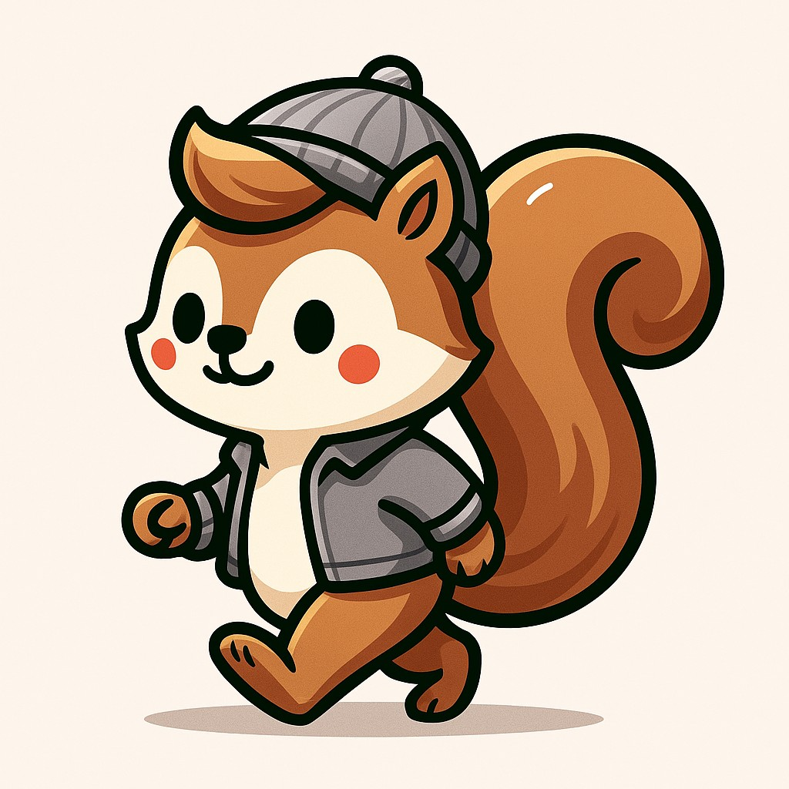

何を使えばいい？
ChatGPTやClaudeなど、自分に合う入口がわからない。
こんな悩みありませんか？
Iwate.AIは、岩手でAIを学びたい人がつまずきやすい壁を、一緒に越えるための場所です。
ChatGPTやClaudeなど、自分に合う入口がわからない。
聞ける相手がいないと、試す前に止まってしまう。
具体的な活用イメージがまだ持てない。
岩手でつながれる仲間や情報が少ない。
そんな不安を、実践の場で解消
Iwate.AIでできること
毎日の情報共有からMeetupまで、使えるAIを身につける仕組みを用意しています。


参加すると何が変わる？
目的が違っても大丈夫。自分に合った形で、生成AIを日常や仕事、学びに活かせます。
参加方法
難しい準備は不要。フォーム申込後、LINEでコミュニティに参加できます。
簡単な入力でOK
※岩手にゆかりのある方限定になります。
LINEオープンチャットへ案内
Tipsを見る・質問する・Meetupに参加
第1回Meetup（予定）
はじめての方も参加しやすい、実践型の学びの場を予定しています。

最新情報はLINEオープンチャットでお知らせします
運営者について
Iwate.AIは、生成AIの知見を地域へ還元したいメンバーが運営しています。
株式会社Uravation代表。大学在学中にAI事業の立ち上げに参画。生成AI登場以降、多数のAIプロダクトを開発。2024年にUravationを設立し、上場企業を含む多数の企業にAI研修を実施。東京で培った生成AIの知見を、故郷・岩手へ還元するためにIwate.AIを始動。

Iwate.AI運営、参加者サポート、地域のAI活用情報の共有を担当。ソフトバンク発のAIエージェント「satto」元エバンジェリスト。
参加案内
AIを学びたい気持ちがあれば、経験は問いません。岩手在住・勤務・出身の方、そして岩手に関わりたい方を歓迎します。
一般・社会人・学生を歓迎します。AI初心者でも参加できます。
コミュニティ参加は無料です。Meetupも無料開催から始めます。
匿名参加OKです。無理なく参加できる範囲から始めてください。
申請用Googleフォームからお申し込みください。送信後、LINEオープンチャットへの案内をお送りします。
無料参加申請
申請はGoogleフォームで受け付けています。
必要事項を入力すると、簡単な審査後にオープンチャットの招待が届きます。